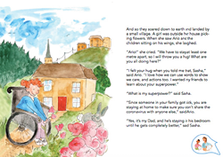
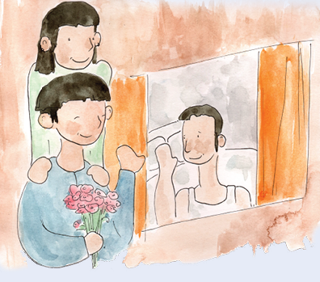

KEY MESSAGE 4 Keeping each other safe
CHAT 4
Let’s CHAT
Sara and Salem talked about how their grandparents make them feel “safe”. Living with the coronavirus has everyone a bit scared. Feeling safe makes us take a big deep sigh of relief and feel the comfort of being hugged. Even if no one touched us, feeling safe, lets us feel hugged. There are many ways to feel safe. For some kids, seeing their Mum smile at them during a hard time might let them feel safe. For other kids, staying at home and playing games with their brothers and sisters and not being teased helps them feel safe. Or, having their Dad join their kid games can make them feel safe.

ASK the children
Who makes you feel safe and what is it they say or do that gives you a feeling of safety?
Children might say:
-
“My Dad has no work. He stays at home all day now. He always looks miserable. Yesterday, we all put on masks and went outside. We just ran and tried to catch each other but did not touch. Playing with my Dad made me feel safe.”
-
“Eating dinner with my family makes me feel safe.”
-
“Sitting around a campfire with the family all together makes me feel safe.”
32
Let’s CHAT
The coronavirus makes us worry about another kind of safety. We worry about staying healthy and keep our bodies safe from catching COVID-19. Ario praised Sasha because she is staying home. Her Dad is sick with COVID-19 and he is contagious and could give COVID-19 to other people, so he is self-isolating and staying in his bedroom away from other people. Sasha is picking flowers and does not feel sick, but she lived in the same house with her Dad before he got sick.
Sometimes people can have the virus inside their bodies and feel fine but can still be contagious. Sasha is a hero because she is staying home and not taking any chances that she might have the virus and could make someone else sick. Sasha and her Dad are staying home and keeping other people safe from getting sick.
Being in self-isolation is lonely. There are many things Sasha could do to bring a smile to her Dad. It doesn’t matter whether Sasha is in a wheelchair or walking or from our same country or from another, we all can bring a smile to someone we love. This is especially important when the person we love has a problem. As example, Sasha could sing outside her Dad’s window.
ASK the children
What other ways can Sasha help her Dad smile while he is sick?
Children could say:
-
“Sasha could draw pictures and push them under the door of his room.”
-
“Sasha could put flowers on the tray her Dad gets for his food.”
-
“She could chat to her Dad outside his door.”
ASK the children
Let’s pretend we are Sasha’s father. What does Sasha’s father say to Sasha after she sings to him to let her know how he feels about her singing?
Children might say that Sasha’s father could say:
-
“Your singing made me feel better.”
-
“Your singing made me happy. Thanks. I love you.”
Let’s CHAT
33Feeling safe and closely connected to other people during COVID-19 is important. We can feel hugged if every day we remember to do something for each other that brings us a smile and makes us feel safe.
> Read this page of My Hero is You

